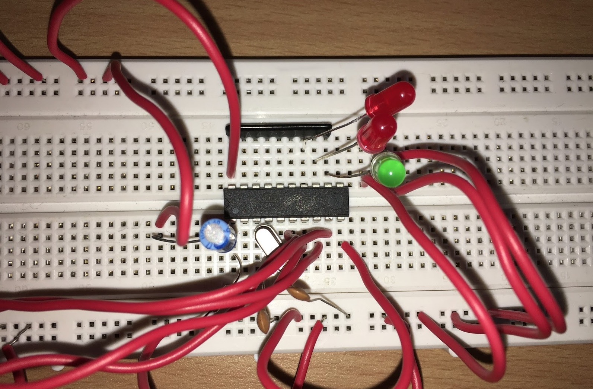
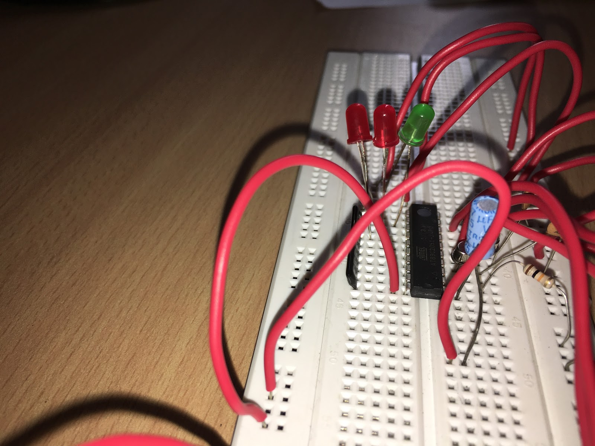

Enhancing Connectivity: Introducing the Dual Tone Multi-Frequency Home Modulation System
Introduction

As technology continues its relentless march forward, it has woven itself into the very fabric of our daily lives, transforming the way we live and interact with our environment. This evolution has ushered in unparalleled levels of comfort and convenience, empowering us to accomplish tasks with greater efficiency and ease, often with minimal human intervention. Indeed, technology's pervasive influence is steadily supplanting manual labor, automating many facets of our day-to-day existence.
Enter the DTMF-based home automation system—an innovative solution designed to seamlessly control electrical circuits or networks housing appliances like fans and light bulbs. At its core, this system harnesses the frequencies generated by a phone, coupled with a DTMF decoder that interprets these signals. Executing commands with precision, a microcontroller orchestrates the desired actions within the circuit. Remarkably, this system enables remote operation via a mobile phone, bridging distances and granting control from afar by simply placing a call to the designated phone linked to the DTMF decoder.
During the call, each button press emits a distinct tone known as Dual Tone Multi-Frequency (DTMF), effectively communicating instructions to the system. The overarching goal of this project is to alleviate manual labor and empower individuals to leverage technology for enhanced comfort and efficiency. By streamlining the operation of home appliances, it not only conserves time and energy but also offers a cost-effective and user-friendly solution. With minimal hardware requirements, users can effortlessly manage their appliances as long as their phones maintain communication, epitomizing the seamless integration of technology into everyday life.
Streamlining Home Management: Embracing Wireless Control for Enhanced Convenience

In traditional household setups, controlling appliances typically involves manual operation of switches. However, the advent of home automation has revolutionized this paradigm, replacing physical switch manipulation with seamless wireless technology. This not only minimizes human effort but also offers a more energy-efficient alternative, thereby promoting sustainability. Moreover, it significantly saves time by providing remote access to appliance controls, negating the need for physical proximity. With the simple use of a mobile phone, individuals can now effortlessly oversee and manage home appliances from any location. This technology also addresses concerns related to energy wastage, ensuring that appliances are not inadvertently left powered on when not in use, thereby contributing to electricity conservation efforts. Furthermore, compared to alternative technologies like GSM, home automation proves to be a cost-effective solution, making it accessible to a broader spectrum of users without compromising on functionality or efficiency.
Conclusion
In our endeavor to streamline the operation of relay circuits, we embarked on a project aimed at simplifying the process of switching them on and off. By integrating LED indicators into our prototype, we've demonstrated how this concept can seamlessly extend to controlling AC devices such as fans and lights. Our DTMF-based home automation system presents a remarkably efficient and straightforward solution for wirelessly managing household devices.
Notably, this system offers significant cost savings, requiring only a single microcontroller and receiver for implementation. Through the utilization of another mobile device, users can establish wireless connectivity and generate dual-frequency tones via the numerical keypad. These tones effectively trigger the appropriate relay, granting users the flexibility to control relay circuits remotely, even from a distance.
In essence, our project represents a versatile and potent tool for automating the operation of appliances connected to electrical switches. In an era of rapid technological advancement, it offers a glimpse into the future of home automation, where the convenience of wireless control enhances the functionality and accessibility of everyday devices.